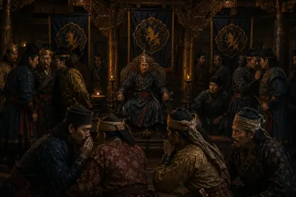
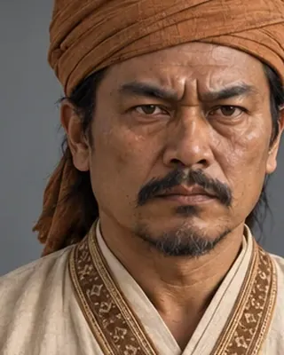
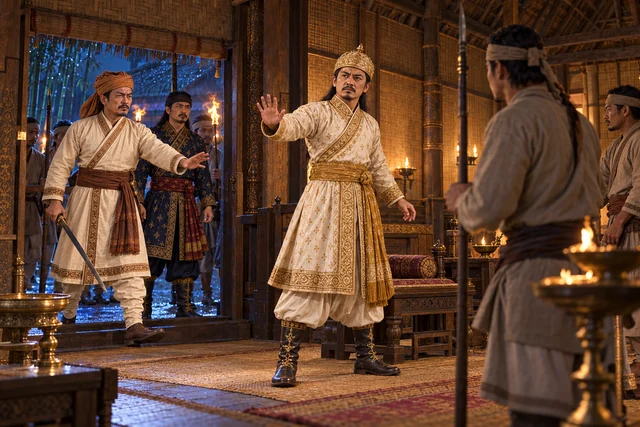
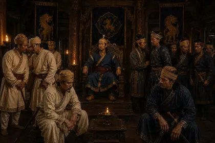
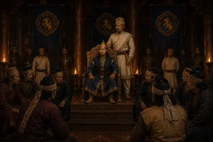
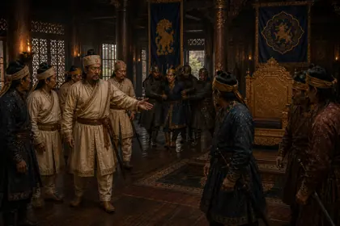

1672–1675
c. 1672–1675 · Borbarua and king-maker

Dominated the court in the 1672–1675 succession struggle, setting up the short-lived kings Suhung and Gobar Roja.
Record confidence: low.

1672–1675

November 1672

1675

1675

1675